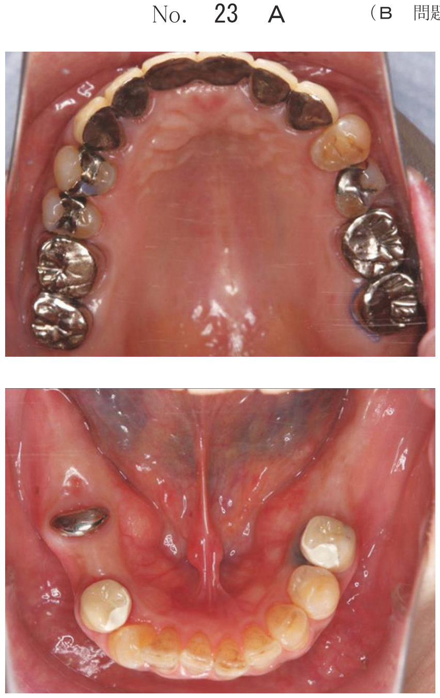
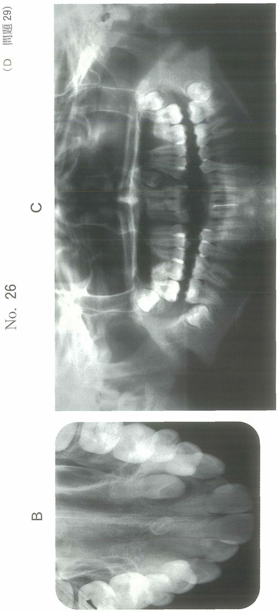

星状神経節ブロック（SGB: stellate ganglion block）は、交感神経に対する神経ブロックの1つで、交感神経依存性疼痛の治療ならびに局所の循環改善を目的に用いられる。鑑別診断を行ううえで診断的治療ともなり、また用いる薬剤を選択することで長期の治療ともなり得る。
頸顔部に分布する交感神経は、交感神経節前線維（B線維）として頸胸部脊髄から起こり、脊椎から出ると星状神経節を経て上行して末梢に分布する。一部は星状神経節を経由せずに上行して、中頸神経節あるいは上頸神経節を形成し局所に分布する。
実際には星状神経節自体をブロックするわけではなく、頸椎横突起前面を上行する頸部交感神経幹をブロックすることで、星状神経節を経由したC線維と、中頸神経節・上頸神経節に至るB線維が混合した神経幹をブロックしてその効果を得る。
| 種類 | 刺入部位 | 備考 |
|---|---|---|
| C6SGB | 第6頸椎横突起の高さ | 歯科領域では通常こちらを使用 |
| C7SGB | 第7頸椎横突起の高さ | 特別な場合に使用 |
エピネフリンを含まない局所麻酔薬を使用する。
最近では安全性と確実性の理由から超音波波ガイド下での手技が推奨されている。
SGBが効果的に施行されると、交感神経遮断によるホルネル徴候と呼ばれる自覚症状が出現する。
| 症状 | 機序 |
|---|---|
| 眼瞼下垂 | ホルネルの三徴候（交感神経遮断による眼症状） |
| 縮瞳 | |
| 眼球陥凹 | |
| 眼球結膜の充血 | 血管拡張 |
| 顔面紅潮 | 血管拡張→血流量増加・皮膚温上昇 |
| 鼻閉 | 鼻粘膜血管の拡張 |
| 発汗ならびに立毛の停止 | 交感神経遮断による分泌抑制 |
32歳の女性。右側下唇の麻痺を主訴として来院した。2週前に下顎右側第三大臼歯を下顎孔伝達麻酔下に抜去してから発現したという。治療中の写真（別冊No.34）を別に示す。
この治療法に伴う生理学的変化はどれか。2つ選べ。

【解説】写真から星状神経節ブロック（SGB）と判断できる。交感神経遮断により血管が拡張し、血流量の増加（b）と皮膚温の上昇（c）が生じる。散瞳（a）は誤りで縮瞳が正しい。発汗量（d）は増加ではなく停止する。鼻腔通気量（e）は鼻閉により減少する。
星状神経節の周囲には重要な構造物が存在し、誤刺入や薬液の拡散によりさまざまな合併症が生じ得る。
| 合併症 | 原因 | 症状 |
|---|---|---|
| 局所麻酔薬中毒 | 椎骨動脈・総頸動脈への誤注入 | 全身けいれん、意識消失 |
| 反回神経麻痺 | 頸長筋前面に針が到達しなかった場合 | 嗄声、無声、嚥下障害 |
| 腕神経叢麻酔 | 針先が横突起起始部前面に達した場合 | 頸部・上肢の感覚運動障害 |
| 硬膜穿刺・クモ膜下注入 | 針が椎間板を貫いて脊柱管内に到達 | 呼吸停止、循環虚脱 |
| 迷走神経麻痺 | 薬液の拡散 | 頻脈、異常高血圧 |
30歳の男性。左口角部の知覚異常のため星状神経節ブロックを行うこととした。第6頸椎横突起の高さで1%リドカイン塩酸塩6mιを注入したところ、突然、全身けいれん発作を起こし意識を消失した。頸動脈で脈拍を触知する。チアノーゼを認める。
適切な処置はどれか。2つ選べ。
【解説】SGB時に全身けいれん＋意識消失→椎骨動脈への誤注入による局所麻酔薬中毒と判断できる。頸動脈で脈拍触知＝心停止ではないため胸骨圧迫（b）は不要。チアノーゼ→酸素投与（a）が必要。けいれんに対してはジアゼパム静注（c）が適切。アドレナリン（d）は心停止時の対応。
SGBでは第6頸椎横突起（Chassaignac結節）を触知して刺入部位を決定する。輪状軟骨の高さがほぼ第6頸椎に相当する。
| 構造物 | 頸椎レベル |
|---|---|
| 舌骨 | C3 |
| 甲状軟骨上縁 | C4 |
| 輪状軟骨 | C6（SGBの刺入レベル） |
50歳の女性。歯科治療後に顔面神経麻痺が生じたため神経ブロックを行うこととした。針の刺入直前の写真（別冊No.36）を別に示す。
触知しているのはどれか。1つ選べ。

【解説】顔面神経麻痺に対する星状神経節ブロックの手技写真。SGBの刺入時に触知するのは第6頸椎横突起（c）である。輪状軟骨（b）はC6の高さを確認するためのランドマークではあるが、直接触知して刺入するのは頸椎横突起の前結節である。